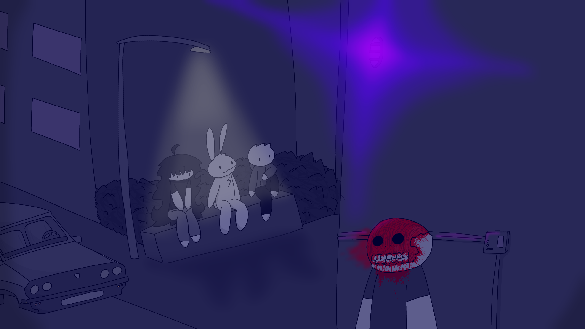
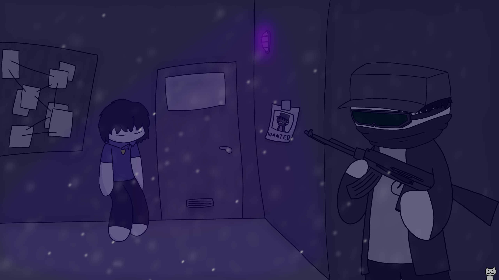

The series takes place in Novi Sad, Serbia in the year 2007

The cities of Novi Sad, Zrenjanin and Reshulka are in an alliance under the FAIV agency
to fight against the City of Belgrade who has control over the country and keeping it
under a comunist regime.
The Faiv (Foundation Aganst Insanity and Violence) agency is a separate part of
the Serbian government that promises freedom but instead is a corupt and another comunist party.

A nuclear plant owned by the BACNWE (Belgrad Agency Corporation of Nuclear Waste of Energy)
situated way too close to the 3 cities under the FAIV agency exploded after an accident
making the civilians
near the incident into mutilated boddies that r alive but hostile, known as Insanities.